Pobranie i instalacja programu XAMPP w Microsoft Windows
1. Pobieramy i instalujemy xamppa ze strony: https://www.apachefriends.org/pl/download.html
2. Wersja zaprezentowana do tego ćwiczenia nie ma znaczenia
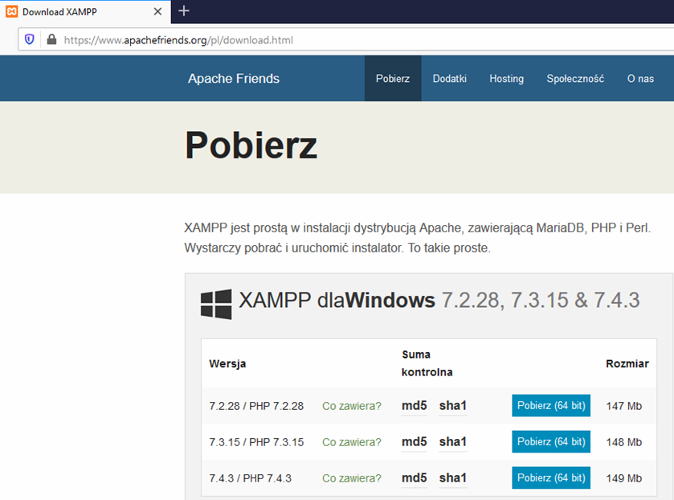
1. Pobieramy i instalujemy xamppa ze strony: https://www.apachefriends.org/pl/download.html
2. Wersja zaprezentowana do tego ćwiczenia nie ma znaczenia
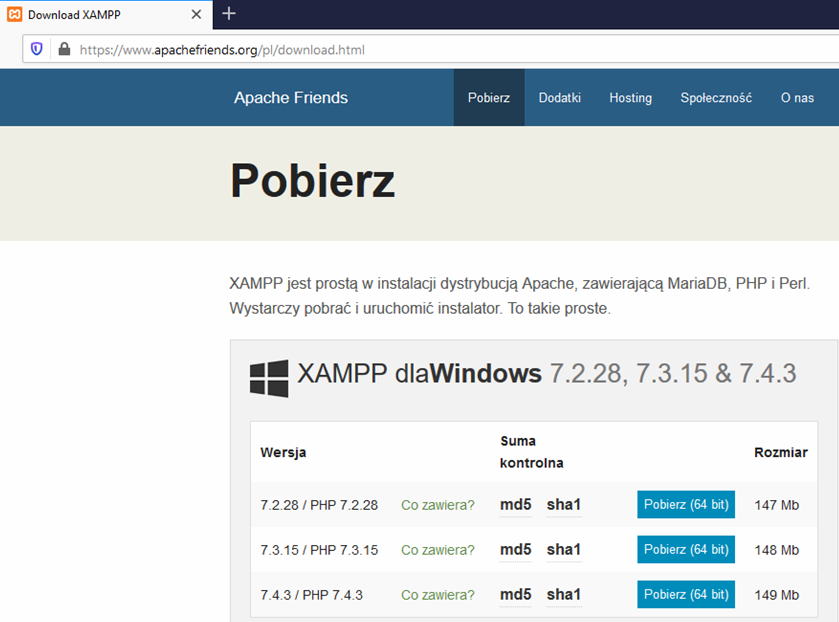
1. Tworzymy nowy projekt w katalogu: C:\xampp\htdocs\Nazwa_Twojego_Projektu (np. imieinazwiskoklasa )
2. Uruchamiamy program "sublime text" i zapisujemy do w/w katalogu plik o nazwie index.php oraz zakładamy struktóre HTML5
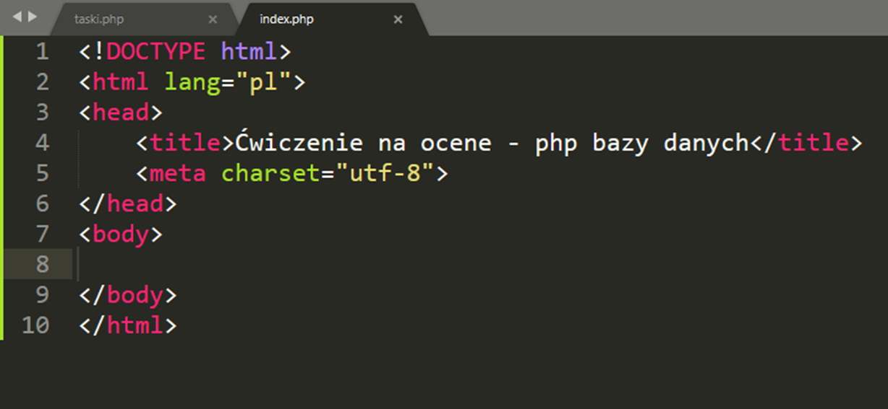
3. Uruchamiany przeględarkę i na pasku url wpisujemy: http://localhost/phpmyadmin/
4. Tworzymy pustą bazę danych o nazwie Szkola klikając polewej na "+Nowa"
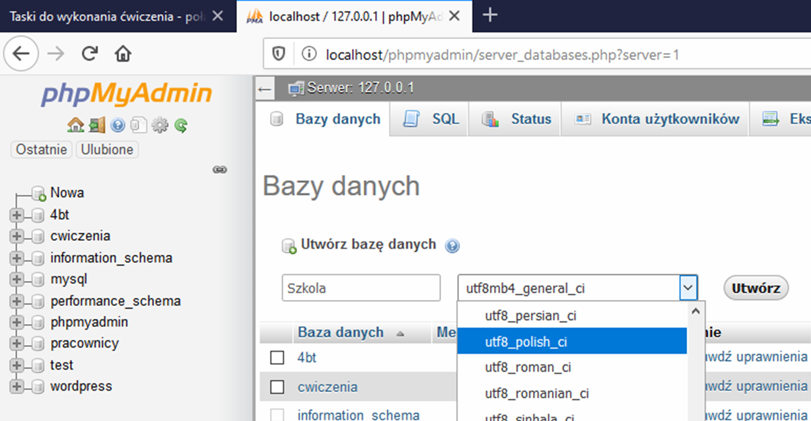
1. Tworzymy nową tabelę o nazwie Uczniowie z 4 kolumnami
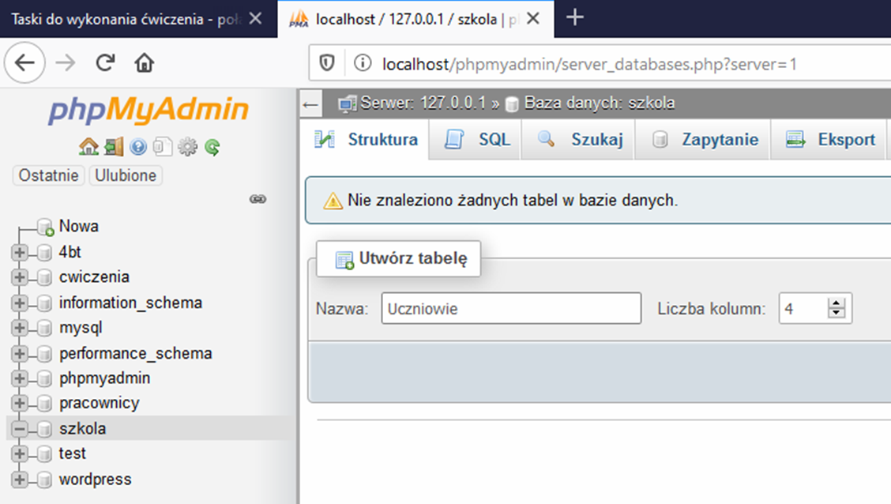
2. Tabela posiada kolumny: IDU int zaznaczam opcje A_I, Imie varchar(50), Nazwisko varchar(50), Adres varchar(50)
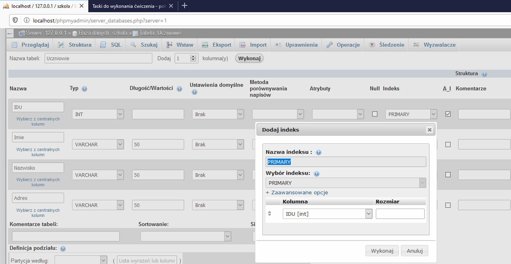
3. Po wypełnieniu formularza oraz ZAZNACZENIU OPCJI A_I dla IDU (A_I - autoincrement - dla klucza podstawowego) uzyskujemy
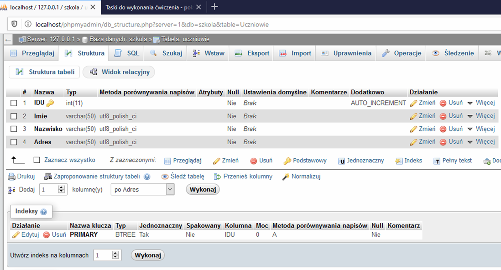
1. Dodajemy 10 rekordów do tabeli "uczniowie" klikając na zakładkę "SQL" oraz wykonujemy zapytanie
2. Wzór przykładowego zapytania: INSERT INTO Nazwa_Tabeli(NazwaKolumny1,NazwaKolumny2) values('Nazwa1','Nazwa2');
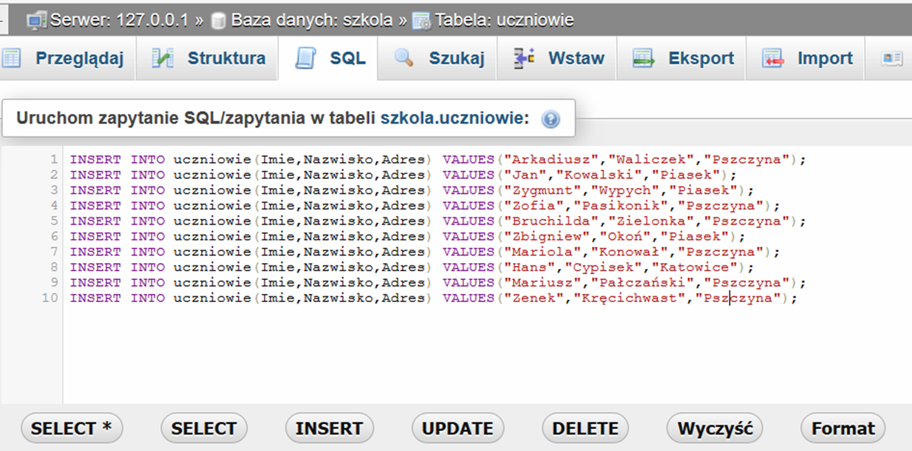
3. Wynik wykonania wstawiania 10 rekordów
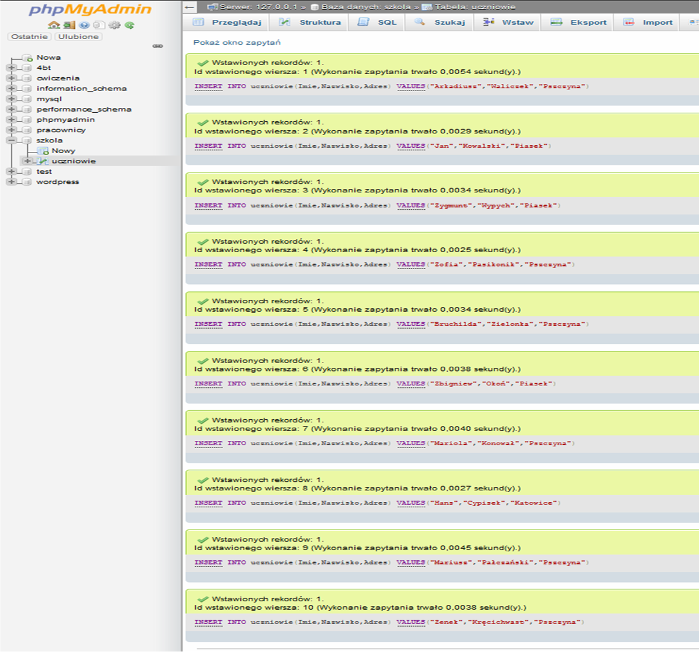
1. Tworzymy nowy plik "polaczenia.php" i zapisujemy go do projektu: "imieinazwiskoklasa"
2. Zawartość polaczenia.php wraz z komentarzami - parametry połączenia
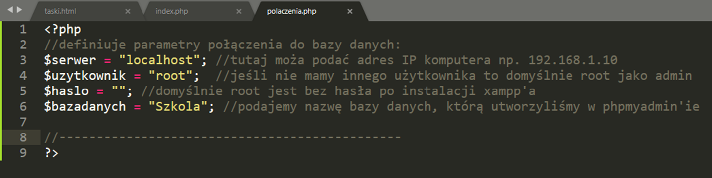
3. Sprawdzenie połączenia z bazą danych czy wszystko GRA ;) dodanie kolejnych linijek kodu
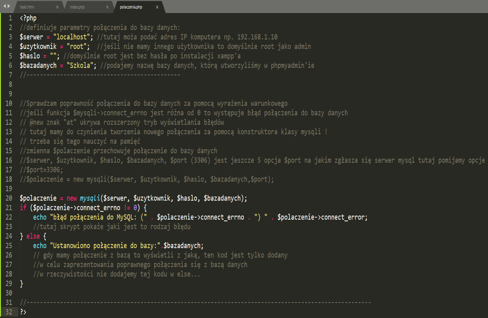
4. Sprawdzenie czy faktycznie połączenie zostało ustanowione z bazą danych
Wpisujemy w przeglądarce internetowej: http://localhost/imieinazwiskoklasa/polaczenia.php
5.Osadzamy skrypt: "polaczenia.php" w index.php oraz zamykamy połączenie z bazą po wykonaniu skryptu
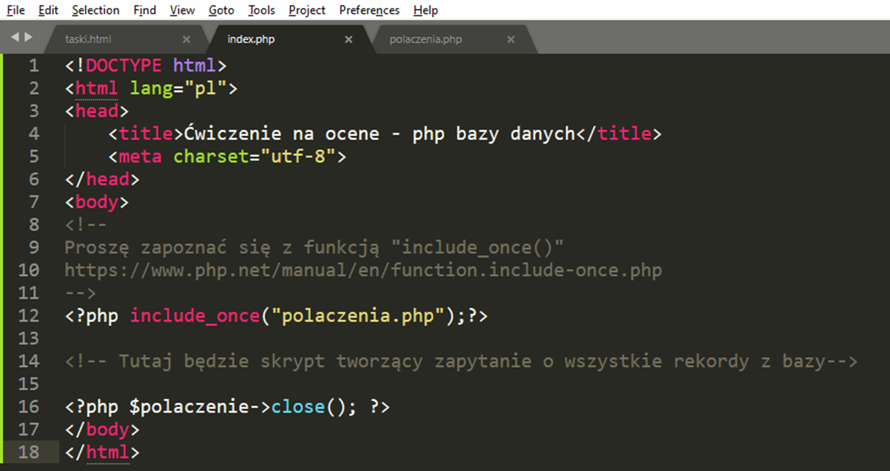
6. Sprawdzamy poprawność skryptu w index.php w przeglądarce: http://localhost/imieinazwiskoklasa/index.php
1. Tworzę zapytanie w pliku index.php, które pobiera wszystkie 10 rekordów z bazy danych
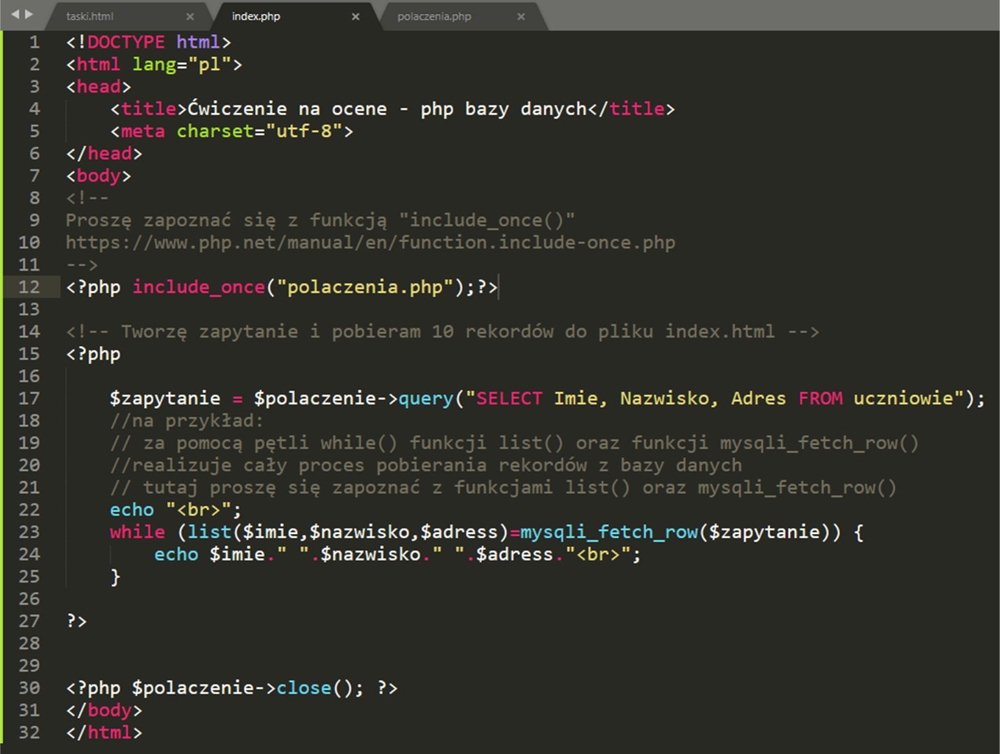
2. Dane zaprezentowane w pliku index.php
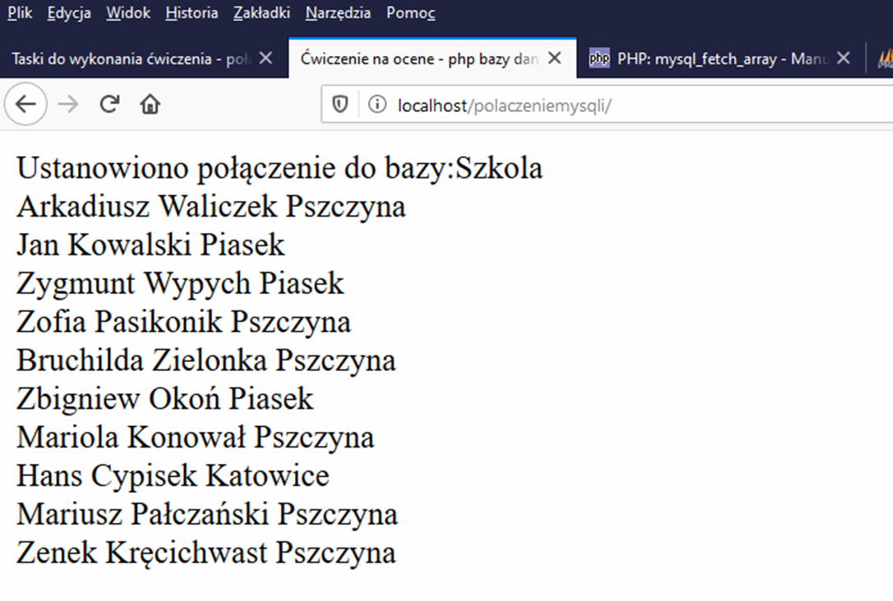
3. Dane zaprezentowane są w formie tabeli - koniec ćwiczenia
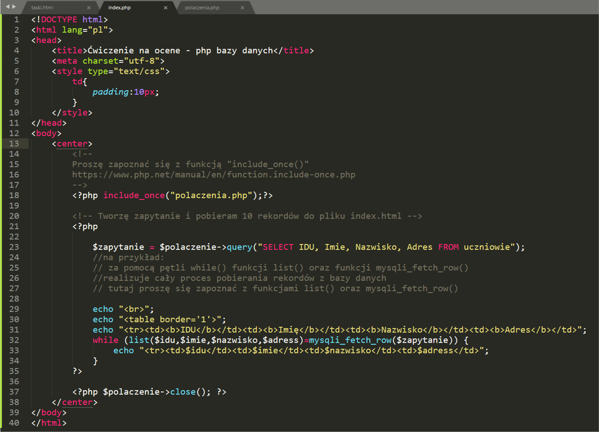
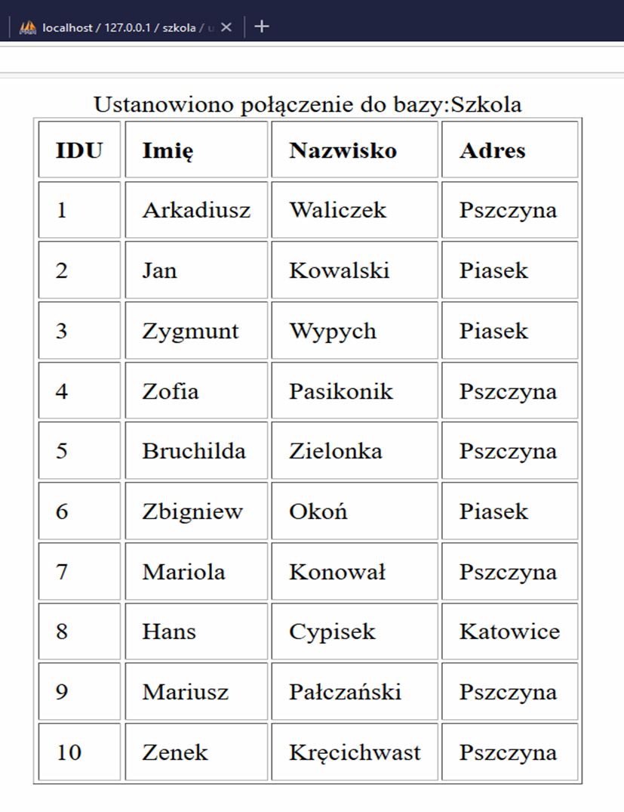
4. Proszę wykonać samodzielnie zadanie ale utworzyć bazę danych "Sklep" wraz z tabelą klienci IDK, imie, nazwisko,adres
5. Wynik zadania wraz z wyeksportowaną bazą danych przesłać na email: informatyka@pszczyna.edu.pl
6.Aby wyeksportować bazę do sql należy (oraz proszę dołączyć dokumenty: index.php oraz polaczenia.php - jako ZIP)
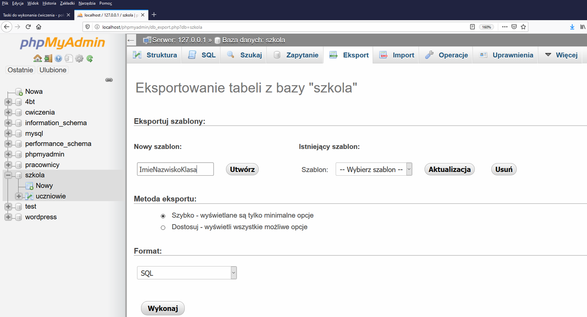
7. Dziękuję za uwagę w razie pytań proszę kontakt: informatyka@pszczyna.edu.pl